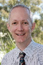
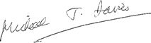

I am very proud to serve as President of SFRR International and to follow the line of eminent scientists who have previously carried out this role. I have had a long involvement in the society going back to my early days as a young postgraduate student, and subsequently as a post-doctoral researcher working in the laboratories of Professors Trevor Slater and Robin Willson at Brunel University. These two people played a key role in the founding of the Society at a meeting held at The Royal Institution in London, and the subsequent early development of the Society. Since then the Society has grown enormously both in terms of scope and membership.
A major focus of the Society's activities is our Biennial scientific meetings hosted by the constituent societies of SFRR-International around the globe.
The next meeting in this series will be hosted by SFRR-Asia and SFRR-Japan and is being held at the Kyoto International Conference Centre, in Kyoto, Japan from March 23-26th, 2014. This city and location were the venue of a previous highly-successful biennial meeting in 1998 which I attended and thoroughly enjoyed – both scientifically and for the wonderful hospitality and stunning location.
I am sure that the organisers of the 2014 meeting are planning an equally wonderful meeting which will be rich in science, and a great opportunity to hear cutting edge advances in our field of research, as well as an opportunity to renew old friendships and establish new collaborations and associations.
The location of the meeting is without doubt one of the most stunning in the world – a UNESCO World Heritage site with a long and rich history going back over 1200 years and was the original imperial capital city. It still retains many palaces and historic sites including over 2000 temples and religious sites, despite being a thriving and exciting modern city with excellent facilities and easy links to the rest of the world. It is also justifiably famous for its cuisine and educational establishments
I encourage you all to attend this meeting and enjoy the scientific and cultural events that this congress will offer.
I look forward to meeting you all in Kyoto in March 2014.


Michael Davies
President, Society for Free Radical Research - International